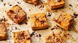

Baked Tofu Recipe
Home

Description
Easy recipe for baked tofu. Delicious warm or cold. A staple for every vegan kitchen!
Ingredients
- cooking spray
- 2 tablespoons soy sauce
- 2 tablespoons agave nectar
- 1 tablespoon toasted sesame oil
- 1 teaspoon minced garlic
- 1 teaspoon minced fresh ginger
- 1 tablespoon sesame seeds, or to taste
- 1 pound tofu, sliced into 8 even pieces
Steps
- Gather the ingredients.
- Preheat the oven to 350 degrees F (175 degrees C). Lightly grease a large baking sheet with cooking spray.
- Whisk soy sauce, agave, sesame oil, garlic, and ginger together in a bowl until evenly combined.
- Gently press tofu pieces to release as much water as possible.
- Arrange tofu on the prepared baking sheet and brush with 1/2 of the soy mixture.
- Bake tofu in the preheated oven for 30 minutes.
- Flip tofu and brush with remaining soy mixture. Sprinkle sesame seeds over top. Continue baking until tofu is crisp, about 30 more minutes.
- Remove from the oven and use a spatula to transfer tofu to a wire rack to cool.